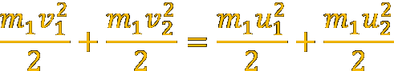
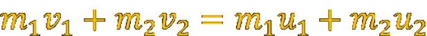
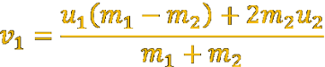
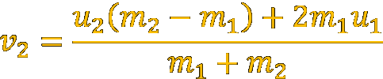

Zderzenie, w którym w stanie końcowym mamy te same cząstki (obiekty) co w stanie początkowym i zakłada się, że nie występują lub są pomijane oddziaływania z innymi ciałami. Oznacza to, że podczas zderzenia spełniona jest zasada zachowania pędu Przyjmuje się też, że oddziaływania podczas zderzenia są sprężyste dlatego energia kinetyczna jest zachowana. Zderzenie, w którym energia kinetyczna nie jest zachowana nazywa się zderzeniem niesprężystym. Całkowita energia kinetyczna po zderzeniu jest równa energii kinetycznej ciał przed zderzeniem:  Całkowity pęd po zderzeniu jest równy pędowi przed zderzeniem:  Z powyższych równań wynikają prędkości ciał po zderzeniu:  
Projekt
Został zrealizowany z wykorzystaniem języka JavaScript, CSS 3.0 oraz HTML5. Sporządzona grafika została wykonana przy pomocy elementu <canvas>. Do modyfikacji dokumentu HTML5 wykorzystano funkcje JavaScript takie jak: "getElementById", "innerHTML". Obsługa zdarzeń została zrealizowana za pomocą funkcji onclick(). Do dołączenia muzyki w tle wykorzystano element <audio>.
Tematyką projektu są zderzenia sprężyste. Dostępne są następujące funkcjonalności: przycisk Teoria - teoretyczne wyjaśnienie zderzeń sprężystych wraz z podstawowymi wzorami
przycisk Nowa losowa animacja - wywołuje funkcję start(), generuje nową animacje z wartościami masy i prędkości kulek wylosowanymi za pomocą funkcji getRandomInt(). Animacja została oparta o grafikę wykonaną przy pomocy elementu canvas. Za wyświetlanie oraz wygasanie animacji odpowiedzialne są funckję fade() oraz unfade(), które operują na własnościach styli "style.display" (właściwości: none oraz block).
przycisk Ustaw paramtery - pozwala użytkownikowi na ustawienie własnych parametrów animacji tj. ilości kulek(maksymalna ilość kulek to 10), ich masy(adekwatnej do promienia) oraz prędkości początkowych. W zależności od liczby kulek generowany jest formularz z odpowiednią ilością wierszy i wstawiany za pomocą funkcji JavaScript "innerHTML". Następuje również walidacja parametrów, tak aby animacja była możliwa. Po najechaniu na ikonke "info" wyświetli się wskazówka na temat najlepszych parametrów. Aby rozpocząć nową animację należy ponownie kliknąć w przycisk Ustaw parametry. Za wyświetlanie oraz wygasanie formularzy i animacji odpowiedzialne są funckję fade() oraz unfade(), które operują na własnościach styli "style.display" (właściwości: none oraz block).
przycisk Wznów - wznawia animacje, która została uprzednio zatrzymana przez przycisk start
przycisk Stop - powoduje zatrzymanie animacji
boczny przycisk Dokumentacja - informacje, które właśnie Państwo czytają ;)